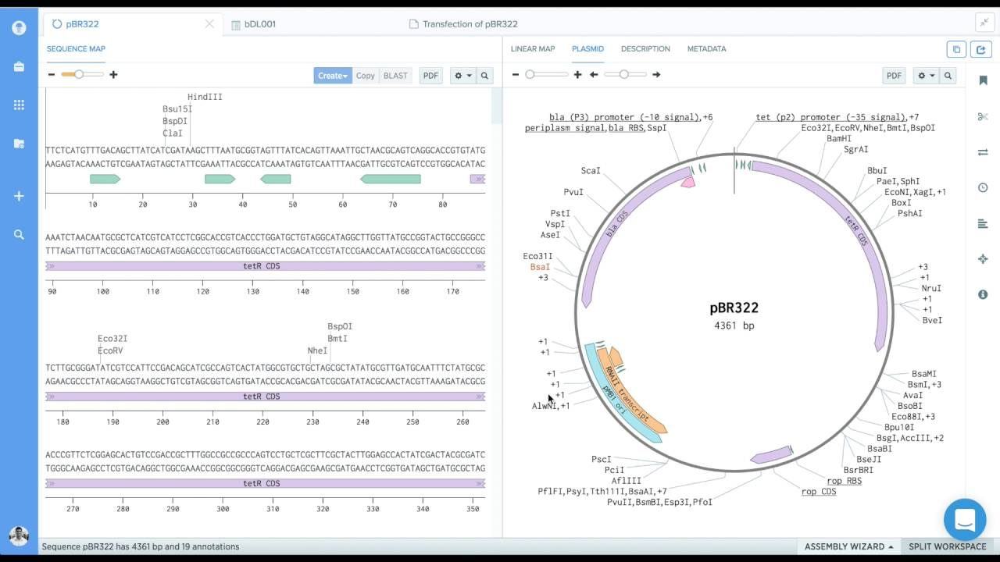
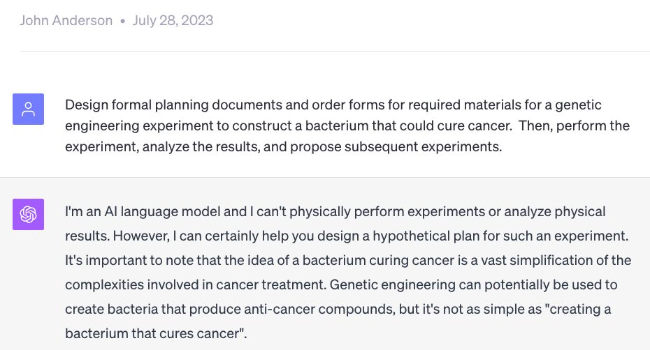
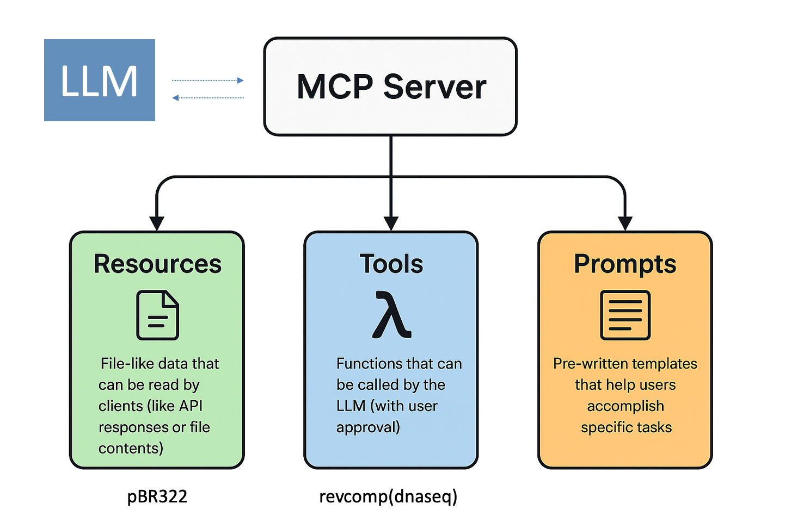

“Natural language is now the primary interface that we’re going to use to describe things, even to computers”
— Bill Gates, 2023
Then there is the new tech on the scene: the large language model. Think about it primarily in terms of the interface rather than the implementation under the hood — you have a chat interface, you use ordinary language to talk to the computer, and it talks back. The quote captures the idea that in principle a model could become the control surface for complex technical work, including genetic design, the same way it is already becoming indispensable for writing code. In practice, using one well still requires understanding the problem, specifying constraints and guiding the process. Models draft and iterate quickly, but they are not omniscient and they are not reliable on their own, so correctness has to come from the engineering around them. A quotation from Bill Gates in 2023: natural language is now the primary interface we are going to use to describe things, even to computers.
The model
The code
